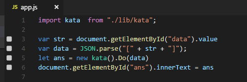
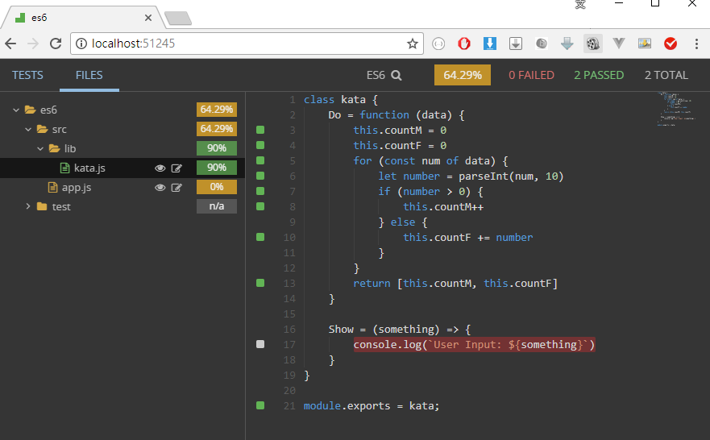
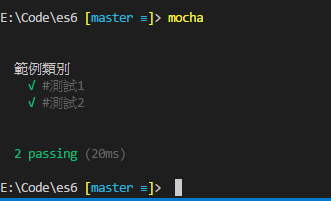
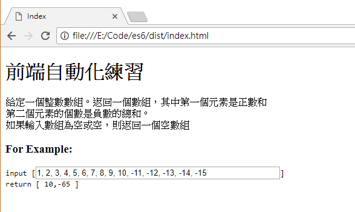

傳統的網頁開發，不外乎就是 HTML + CSS，以這兩者為主體，添加其他功能。乍看之下很簡單，但是需求往往很複雜，需要透過 javascript 完成的事情太多了，有跟 UI 相關的操作、有邏輯的部份，如果再加上引用其他的框架、功能等等，光是前後載入的順序就能搞死一堆人。趁這次休息有點時間，開始動手練習最近接觸到的一些前端工具… …
真男人就是要看 Code：ES6 + Webpack
好像很多前端專案都是區分為 src 目錄與 dist 目錄，所以我也就這樣幹了~~ (大誤)，不是啦，其實是有深意的。source 目錄做為開發使用、編輯、調整都在這邊操作；而 dist 目錄則是產出的結果，中間則是經過自動化的一系列操作(當然要我們自己去設定…)，前端通常會用到的一些處理，大概就是壓縮、打包、混淆之類的吧，現在又因為 ECMAScript 走起來了，有好多好多人性化的功能跟寫法，為了要享受這一切，於是有了轉譯 javascript 這一件事情
babel
瀏覽器可以支援的 javascript 不夠新，不能夠支援 ECMAScript 新的標準，在這個過渡期間，開發網頁如果要享受到新語法的好處，勢必要先將新語法轉換成瀏覽器看得懂的語法。前端 javascript 採用 ES6 的語法，將功能模組化，並於頁面的 script 程式中透過 import 載入，感覺好像 C#的 using 喔，然後再把類別給 new 出來，這樣的開發方式好習慣。(大心)

之後要透過 webpack 的套件HtmlWebpackPlugin，將 Html 檔案從 src 目錄複製到 dist 目錄，所以要先準備好 source 的 HTML 檔案
webpack
可以將多個檔案打包在一起，HTML 只需要載入一個檔案，跟相依性造成的 Bug 說 886。
在開發環境的時候，需要 Source-Map 功能方便 Debug，而且修改了程式碼之後，要能夠立即自動化 babel 轉譯語法，方便前端開啟網頁測試。(好像還有個 Hot Reload 之類的東西，但是我自己應用的環境是 C#處理後端，所以這一塊比較沒需求，因為我都會先在 VS2017 把網站開起來測試)；生產環境就不需要 debug 相關的東西了，但是需要將程式碼壓縮、節省網路傳輸量，參考 webpack 官方文件的設定，將設定檔區分為共用的、開發的、生產的三份檔案，在配置上感覺較有條理，配合 npm 的 script 區塊，將指令都寫在 package.json 那邊。
wallaby.js & quokka.js
氪金套件，但是買了絕對不會後悔，wallaby.js 支援 TDD 的開發方式，但是目前並不支援 cucumber；wallaby.js 的設定較為繁瑣，可能是因為功能也很強大，支援了很多很多的東西，這部分有興趣的人請自行前往官網了解喔。(因為我看不懂唷~~)，wallaby.js 的好處除了即時回饋之外 (小綠點) ，啟用之後開啟 localhost:51245 也可以看到測試涵蓋率等等資訊。

而 quokka.js 有提供社群版本，花錢買的版本能夠讓你 import 自己寫的 js，而 wallaby 及 quokka 氪金版本都能夠透過 //?. 看到執行時間，對於效能調教應該很有幫助。
mocha
單元測試套件，我覺得前端已經很複雜了，如果沒有測試保護，很容易自己開發到後面會越來越沒底氣，寫寫測試起碼能知道三個月前的自己原來還寫了個 lib 可以用在新的需求上….反正好處很多啦。如果想嘗試 TDD，但是不想氪金購買 wallaby.js，其實直接用 mocha 也很夠用了。

最終結果
